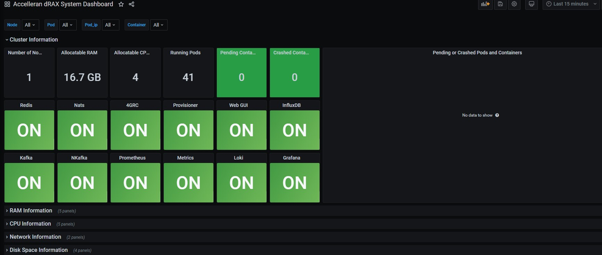
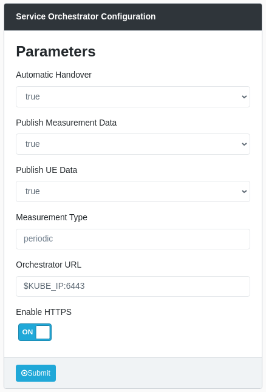

RIC & CU Installation¶
Introduction¶
This document contains only the minimal set of information to achieve a default installation of dRAX, with some assumptions made such as software and hardware prerequisites as well as Network Configuration.
The first section gives a detailed overview on hardware, software and other requirements that are considered as default prerequisites to install and operate a dRAX installation. Customers who require a more custom-designed deployment should contact Accelleran's Customer Support team to get a tailored solution.
The second section describes all of the steps needed to deploy and run a new software version of Accelleran's dRAX for the first time, using provided Helm charts. This section is split into multiple subsections, including one for the installation of the dRAX base, one for the 4G components, and one for the 5G components. For a first time installation, it is important to verify of course the SW and HW prerequisites presented in this document before proceeding further.
The third section covers configuration of dRAX, including details on both RAN as well as xApp configuration.
We advise customers who wish to know more about dRAX's architecture to request the full dRAX Architecture User Guide.
Software and Hardware Prerequisites¶
The assumption made in this User Guide is that the typical Customer who doesn't want a full turn key dRAX kit is familiar with Server installations, VMs and VNFs
Also, as mentioned in the Overview section of this document, it is assumed that the Customer has already created a VM with a $NODE_IP address in the same subnet of the Server ($SERVER_IP) and a linux bridge br0.
Software Requirements have been installed in previous chapter.¶
- Linux Ubuntu Server 20.04 LTS
- Docker (recommended version 19.03, check the latest compatible version with Kubernetes)
- Permanently disabled swap
- Kubernetes 1.13 or later till 1.20 (1.21 is currently unsupported)
- Helm, version 3
Other Requirements¶
- dRAX License, as provided by Accelleran's Customer Support team
- The Customer Network allows access to internet services
- a DockerHub account, and have shared the username with the Accelleran team to provide access to the needed images
- EPC/5GC must be routable without NAT from dRAX (and E1000 DUs in case of 4G)
- From Accelleran you will need access to the Dockerhub repository
- please create your account with user, password and email from dockerub
4G Specific requirements:¶
- A DHCP server must be available on the subnet where the E1000 DUs will be installed
- E1000 DUs must be in the same subnet as Kubernetes' advertise address (otherwise refer to Appendix: E1000 on separate subnet)
Limitations :¶
- When using a graphical interface, make sure it will not go to sleep or to standby.
Installation¶
Introduction¶
This section explains how to install dRAX for the very first time in its default configuration. Assuming that the Customer has already verified all the prerequisites described in the previous Section 4. If you already have dRAX and are only updating it, please refer to the section on updating an existing installation.
dRAX consists of multiple components:
- RIC and Dashboard (required)
- 4G components based on Accelleran's E1000 DU and 4G CU
- 5G components based on Accelleran's 5G SA CU
You should decide at this point which of these components you intend to install during this process as it will impact many of the steps.
Plan your deployment¶
We recommend storing all files created during this installation process inside of a dedicated folder, e.g. dRAX-yyyymmdd, so that they are clearly available for when you next update the installation. These files could also be committed to version control, or backed up to the cloud.
Plan parameters¶
Please determine the following parameters for your setup - these will be used during the installation process.
| Description | Parameter |
|---|---|
| Kubernetes advertise IP address | $NODE_IP |
| The interface where Kubernetes is advertising | $NODE_INT |
Prepare License and Certificate¶
In order to run Accelleran's dRAX software, a License file is required - please contact Accelleran's customer support to request the appropriate license. This license file will be named license.crt and will be used in a later step.
4G Only : If you intend to deploy the 4G aspects of dRAX (together with Accelleran's E1000 4G DUs), you will also need to prepare a certificate to ensure secure communication between the various components. Please refer to the Appendix on creating certificates. This will also need to be validated and signed by Accelleran's customer support team, so please do this in advance of attempting the installation.
Namespaces¶
The definition of namespaces is optional and should be avoided if there is no specific need to define them in order to separate the pods and their visibility, as it brings in a certain complexity in the installation, the creation of secrets, keys, and the execution of kubernetes commands that is worth being considered upfront. At the preference of the customer, additional Kubernetes namespaces may be used for the various components which will be installed during this process. Kubernetes namespaces should be all lowercase letters and can include the "-" sign.
As mentioned, extra steps or flags must be used with most of the commands that follow. The following table describes the different “blocks” of components, and for each, a distinct namespace that may be used, as well as the default namespace where these components will be installed.
| Description | Parameter | Default Namespace |
|---|---|---|
| Core dRAX components | $NS_DRAX |
default |
| dRAX 4G CUs | $NS_4G_CU |
$NS_DRAX |
| dRAX 5G CUs | $NS_5G_CU |
default |
The Default Namespace column sometimes contains another Namespace placeholder, e.g. the NS_4G_CU default is $NS_DRAX - this means that the default behaviour is to run the CUs in the $NS_DRAX namespace, but it can be overridden. If neither $NS_DRAX nor $NS_4G_CU is specified, the CU will run in the "default" namespace.
Install dRAX for the first time¶
When you are not dealing with a new installation you can skip this chapter and move to chapter "Updating existing installation"
install helm¶
if helm is not yet installed install it this way
curl -fsSL -o get_helm.sh https://raw.githubusercontent.com/helm/helm/main/scripts/get-helm-3
chmod 700 get_helm.sh
./get_helm.sh
Add Accelleran Helm Chart Repo¶
Use the helm command:
helm repo add acc-helm https://accelleran.github.io/helm-charts/
Update Helm Charts¶
To update to our latest version, we need to update the Helm charts:
helm repo update
Create namespace(s) for dRAX (optional)¶
If you choose to use dedicated namespaces for dRAX, please create them before the installation process.
export NS_DRAX=$NS_DRAX
kubectl create namespace $NS_DRAX
This needs to be repeated for each namespace that you wish to use for dRAX, either for the RIC, 4G or 5G components, as per the table in the Namespaces section.
Warning
If you choose to use specific namespaces, special care must be used throughout the remaining steps when executing the kubectl commands. For each one, it is important to specify the appropriate namespace using the -n option, example:
set -x
kubectl get pods -n $NS_DRAX
set +x
Configure DockerHub credentials in Kubernetes¶
If you have previously obtained (from the Customer Support) access to Accelleran Dockerhub repository, you can now proceed to create a secret named accelleran-secret with your DockerHub credentials, specifically using the kubectl command (do not forget the -n <namespace> option if you selected different namespaces previously):
kubectl create secret docker-registry accelleran-secret --docker-server=docker.io --docker-username=$DOCKER_USER --docker-password=$DOCKER_PASS --docker-email=$DOCKER_EMAIL
This needs to be repeated for each namespace that you created previously, specifying each namespace one time using the -n flag.
Configure License in Kubernetes¶
Create a secret named accelleran-license using the previously provided License file.
The name of this secret is critical - this name is used in our Helm charts to access the License file.
Please refer to the previous section on the License file if you don't yet have one.
kubectl create secret generic accelleran-license --from-file=license.crt
Note: if you need for any reason to use a license file with a different (ex. myfile) name the command is a bit more cumbersome:
kubectl create secret generic accelleran-license --from-file=license.crt=myfile
This needs to be repeated for each namespace that you created previously, specifying each namespace one time using the -n flag.
Install dRAX RIC and Dashboard¶
Prepare RIC values configuration file¶
We first have to prepare the Helm values configuration file for the dRAX RIC and Dashboard Helm chart.
To do so, we first retrieve the default values file from the Helm chart repository and save it to a file named ric-values.yaml.
We do this with the following command:
curl https://raw.githubusercontent.com/accelleran/helm-charts/${RIC_VERSION}/ric/simple-values/simple-values.yaml > ric-values.yaml
Next, edit the newly created ric-values.yaml file.
Find the following fields and edit them according to your setup.
We use parameters from the Plan your deployment section, such as
* $NODE_IP, to show what should be filled in
In the example below we disabled 4G assuming we don't install the 4G component.
global:
kubeIp: $NODE_IP
enable4G: false
# Enable the components that you intend to install
# Note that these must also be supported by the License you have
Enabling 5G components¶
If you plan to install the 5G components (and you have the license to support this), you need to make a few other adjustments to the ric-values.yaml file:
Let the $E1_CU_IP and $F1_CU_IP be the last in the range of ip addresses in the file below. Of which the $F1_CU_IP is the last one in the range and is the odd number in the LSB of the ipv4. eg: RANGE=10.10.10.110-10.10.10.121 , E1=10.10.10.120, F1=10.10.10.121
global:
enable5G: true
acc-5g-infrastructure:
metallb:
configInline:
address-pools:
- name: default
protocol: layer2
# IP pool used for E1, F1 and GTP interfaces when exposed outside of Kubernetes
addresses:
- $LOADBALANCER_IP_RANGE
NOTE : The IP pool which is selected here will be used by MetalLB, which we use to expose the E1, F1, and GTP interfaces to the external O-RAN components, such as the DU, and the 5GCore. In other words, the CUCP E1, CUCP F1 and the CUUP GTP IP addresses will be taken from the specifed pool:
$ kubectl get services
#NAME TYPE CLUSTER-IP EXTERNAL-IP PORT> S) AGE
#acc-5g-cu-cp-cucp-1-sctp-e1 LoadBalancer 10.107.230.196 192.168.88.170 38462:31859/SCTP 3h35m
#acc-5g-cu-cp-cucp-1-sctp-f1 LoadBalancer 10.99.246.255 192.168.88.171 38472:30306/SCTP 3h35m
#acc-5g-cu-up-cuup-1-cu-up-gtp-0 LoadBalancer 10.104.129.111 192.168.88.160 2152:30176/UDP 3h34m
#acc-5g-cu-up-cuup-1-cu-up-gtp-1 LoadBalancer 10.110.90.45 192.168.88.161 2152:30816/UDP 3h34m
NOTE : MetalLB works by handling ARP requests for these addresses, so the external components need to be in the same L2 subnet in order to access these interfaces. To avoid difficulties, it's recommended that this IP pool is unique in the wider network and in the same subnet of your Kubernetes Node
Enabling 4G components¶
4G Only : when you don't need 4G you can skip and move on to chapter Install the dRAX RIC and Dashboard where the RIC is actually being installed.
If you are not planning any 4G deployment you can skip this section and proceed to the Install the dRAX RIC and Dashboard section
4G : Prepare keys and certificates for the dRAX Provisioner¶
The working assumption is that keys and certificates for the dRAX Provisioner have been created by the Accelleran Support Team, however, for a more detailed guide, please check the Appendix: dRAX Provisioner - Keys and Certificates Generation of this document.
4G : Create configMaps for the dRAX Provisioner¶
We now need to store the previously created keys and certificates as configMaps in Kubernetes, so that they can be used by the dRAX Provisioner:
kubectl create configmap -n $NS_DRAX_4G prov-server-key --from-file=server.key
kubectl create configmap -n $NS_DRAX_4G prov-server-crt --from-file=server.crt
kubectl create configmap -n $NS_DRAX_4G prov-client-crt --from-file=client.crt
kubectl create configmap -n $NS_DRAX_4G prov-client-key --from-file=client.key
kubectl create configmap -n $NS_DRAX_4G prov-ca-crt --from-file=ca.crt
Warning
The names of these configmaps are critical - these names are referenced specifically in other parts of Accelleran's software.
4G : Prepare the values configuration file¶
If you plan to install the 4G components (and you have the license to support this), you need to make a few other adjustments in the ric-values.yaml file
we first need to enable the 4G components:
global:
enable4G: true
Find and update the following fields with the names of the Namespaces which you've chosen to use:
4g-radio-controller:
config:
# The namespace where the 4G CU pods will be installed
l3Namespace: "$NS_4G_CU"
Finally, if you are using the Provisioner, you need to configure the provisioner-dhcp component. This component is using the DHCP protocol, and hence needs to know the default interface of the machine where dRAX is installed. This interface will be used to reach the cells, hence make sure the cells are reachable through the interface specified here. The configuration is located here:
provisioner-dhcp:
configuration:
Interface: eno1
Here, change eno1 to the intended interface on your machine.
4G : Pre-provisioning the list of E1000 DUs¶
If you already have access to the Accelleran E1000 DUs that you wish to use with this dRAX installation, we can pre-provision the information regarding these during installation. This can also be done later, or if new E1000 DUs are added.
Each Accelleran E1000 has a Model, a Hardware Version, and a Serial Number - this information is displayed on the label attached to the unit, and is required in order to pre-provision the DUs.
A unique identifier is constructed from this information in the following format: Model-HardwareVersion-SerialNumber.
This identifier is then listed, along with a unique name, for each E1000.
This name could be as simple as du-1 - all that matters is that it is unique in this dRAX installation.
Edit the drax-4g-values.yaml file, adding a new line for each E1000 that you would like to pre-provision:
configurator:
provisioner:
# Pre-provision the E1000 4G DUs, create a list of identifier: name as shown below
cells:
E1011-GC01-ACC000000000001: du-1
E1011-GC01-ACC000000000002: du-2
(In this example, the E1000 specific Model is E1011, the Hardware Version is GC01, and the Serial Numbers were 0001, and 0002. Update this according to the values of your E1000s.)
Note
If your dRAX installation and Accelleran E1000s will not be on the same subnet, after completing the previous step, please also follow Appendix: dRAX and Accelleran E1000s on different subnets.
4G : Update E1000 DUs¶
The Accelleran E1000 DUs need to be updated to match the new version of dRAX. The following steps will guide you through this update process. As a prerequisite, the E1000s must be powered on, and you must be able to connect to them via SSH. If you do not have an SSH key to access the E1000s, contact Accelleran's support team.
4G : Download the E1000 update files¶
There is a server included with the dRAX installation that hosts the E1000 update files. Depending on the E1000 type (FDD or TDD), you can grab those files using the following command:
curl http://$NODE_IP:30603/fdd --output fdd-update.tar.gz
curl http://$NODE_IP:30603/tdd --output tdd-update.tar.gz
Note
Please replace the $NODE_IP with the advertised address of your Kubernetes
4G : Update software of E1000¶
Copy the TDD or FDD image to the E1000 in /tmp/. For example:
scp -i ~/guest.key tdd-update.tar.gz guest@<ip_of_e1000>:/tmp/update.tar.gz
SSH into the E1000:
ssh -i guest.key guest@<ip_of_e1000>
Now execute:
do_update.sh
4G : Verify the update of E1000 on the unit and the alignment with dRAX version¶
To validate that the newly updated software matches with the installed version of dRAX, we can run the following steps:
SSH into the E1000:
ssh -i guest.key guest@<ip_of_e1000>
Note down the Git commit of the newly installed software:
strings /mnt/app/acc.tar | grep Git
Now on the dRAX server, we need to retrieve the Git commit of the 4g-radio-controller to compare.
Find the correct pod name using this command:
kubectl get pods | grep 4g-radio-controller
With the full pod name, run the following command (replace xxx with the correct identifier from the previous command):
kubectl exec -it drax-4g-4g-radio-controller-xxxx -- cat /data/oranC | strings | grep Git
The two commits must match, if not please verify the installation and contact Accelleran for support.
Install the dRAX RIC and Dashboard¶
Install the RIC and Dashboard with Helm (if installing without dedicated namespaces, leave off the -n option):
helm install ric acc-helm/ric --version $RIC_VERSION --values ric-values.yaml -n $NS_DRAX
Info
The installation may take up to 5 minutes, it is essential that you wait till the installation is completed and all the pods are in RUNNING or COMPLETE mode, please do NOT interrupt the installation by trying to regain control of the command line
To check if the installation was successful first use Helm:
helm list
#NAME NAMESPACE REVISION UPDATED STATUS CHART APP VERSION
#ric default 1 2022-08-30 12:23:24.894432912 +0000 UTC deployed ric-5.0.0 5.0.0
Than view the pods that have been created.
watch kubectl get pod
You should see something like this. You can ignore the status of Jaeger in this release. It is not used at the moment.
NAME READY STATUS RESTARTS AGE ric-acc-fiveg-pmcounters-6d47899ccc-k2w66 1/1 Running 0 56m ric-acc-kafka-955b96786-lvkns 2/2 Running 2 56m ric-acc-kminion-57648f8c49-g89cj 1/1 Running 1 56m ric-acc-service-monitor-8766845b8-fv9md 1/1 Running 1 56m ric-acc-service-orchestrator-869996756d-kfdfp 1/1 Running 1 56m ric-cassandra-0 1/1 Running 1 56m ric-cassandra-1 1/1 Running 5 54m ric-dash-front-back-end-85db9b456c-r2l6v 1/1 Running 1 56m ric-fluent-bit-loki-jpzfc 1/1 Running 1 56m ric-grafana-7488865b58-nwqvx 1/1 Running 2 56m ric-influxdb-0 1/1 Running 1 56m ric-jaeger-agent-qn6xv 1/1 Running 1 56m ric-kube-eagle-776bf55547-55f5m 1/1 Running 1 56m ric-loki-0 1/1 Running 1 56m ric-metallb-controller-7dc7845dbc-zlmvv 1/1 Running 1 56m ric-metallb-speaker-vsvln 1/1 Running 1 56m ric-metrics-server-b4dd76cbc-hwf6d 1/1 Running 1 56m ric-nats-5g-0 3/3 Running 3 55m ric-nkafka-5g-76b6558c5f-zs4np 1/1 Running 1 56m ric-prometheus-alertmanager-7d78866cc6-svxc5 2/2 Running 2 56m ric-prometheus-kube-state-metrics-585d88b6bb-6kx5l 1/1 Running 1 56m ric-prometheus-node-exporter-pxh6w 1/1 Running 1 56m ric-prometheus-pushgateway-55b97997bf-xb2m2 1/1 Running 1 56m ric-prometheus-server-846c4bf867-ff4s5 2/2 Running 2 56m ric-redis-5g-6f9fbdbcf-j447s 1/1 Running 1 56m ric-vector-84c8b58dbc-cdtmb 1/1 Running 0 56m ric-vectorfiveg-6b8bf8fb4c-79vl7 1/1 Running 0 56m ric-zookeeper-0 1/1 Running 1 56m
Install dRAX 5G Components¶
NOTE : when you can't reach the VM from the server the browser is running you can add some iptables in the DU server ( the bare metal ).
use URLsudo iptables -A PREROUTING -t nat -p tcp --dport 31315 -j DNAT --to $NODE_IP:31315 sudo iptables -A FORWARD -p tcp -d $NODE_IP --dport 31315 -j ACCEPThttp://<external-ip-du-server>:31315/to access the drax dashboard to make these ip rules persistent performsudo apt install iptables-persistent chown $USER /etc/iptables/rules.v4 chmod 775 /etc/iptables/rules.v4 sudo iptables-save > /etc/iptables/rules.v4
Accelleran's 5G Components are managed and installed via the Dashboard. From the dRAX Dashboard sidebar, select New deployment and then click 5G CU deployment:

You will reach the Deploy a new CU component page. Here, you have the ability to deploy either a CU-CP or a CU-UP component. Therefore, you first have to pick one from the drop-down menu:

5G CU-CP Installation¶
When installing the 5G CU-CP component, there are a number of configuration parameters that should be filled in the Deploy a new CU component form once the CU-CP is chosen from the drop-down menu.
The form with the deployment parameters is shown below:
NOTE : fill in the E1 and F1 address manually according to what's set in the Preperation section in the start of this installation document. for F1 it will be the ip address we will also configure the DU with.

Required Parameters¶
The deployment parameters are split into required and optional ones.
It is important to pay attention to certain constraints on two of the parameters in order to obtain the desired installation:
- The Instance ID must consist of no more than 16 lower case alphanumeric characters or '-', start with an alphabetic character, and end with an alphanumeric character (e.g. 'my-name', or 'abc-123', but not 123-cucp)
- The maximum number of UE that can be admitted depends also on how many ds-ctrl components get created (by default one per UE) so because occasionally at attach the UE may need two of such components, as a rule of thumb the desired maximum number of UEs must be doubled: if you intend to have at most 2 UEs, set the maximum number of UEs to 4
The required parameters are:
| Required Parameter | Description |
|---|---|
| Instance ID | The instance ID of the CU-CP component - this must be unique across all CU-CP and CU-UPs |
| Number of supported AMFs | The maximum number of AMFs which can be connected to at any time |
| Number of supported CU-UPs | The maximum number of CU-UPs which can be connected to at any time |
| Number of supported DUs | The maximum number of DUs which can be connected to at any time |
| Number of supported RUs | The maximum number of RUs which can be supported at any time |
| Number of supported UEs | The maximum number of UEs which can be supported at any time |
Once the deployment parameters are set, click the submit button to deploy the 5G CU-CP.
Optional Parameters¶
The optional parameters are auto-discovered and auto-filled by dRAX. As such they do not need to be changed. However, depending on the use case, you may want to edit them. In this case, you first have to toggle the Set optional parameters to ON. The optional parameters are:
| Optional Parameter | Description |
|---|---|
| NATS URL/Port | Connection details towards NATS. When installing the RIC and Dashboard component, if you set the enable5g option to true, a NATS server was deployed, which will be auto-discovered. |
| Redis URL/Port | Connection details towards Redis. Similar to NATS, if you set the enable5g option to true, a Redis server was deployed, which will be auto-discovered. |
| dRAX Node Selector name | If you label your Kubernetes node with the label draxName, you can specify the value of that label here and force the CU component to be installed on a specific node in the cluster. |
| Namespace | The namespace where the CU component should be installed. |
| E1 Service IP | Part of the CU-CP is the E1 interface. The 5G component will be exposed outside of Kubernetes on a specific IP and the E1 port of 38462. This IP is given by MetalLB, which is part of the 5G infrastructure. If this field is set to auto, MetalLB will give out the first free IP, otherwise you can specify the exact IP to be used. NOTE: The IP must be from the MetalLB IP pool defined in Enabling 5G components. |
| F1 Service IP | Similar to E1, you can specify the IP to be used for the F1 interface. NOTE: Again it has to be from the MetalLB IP pool defined in Enabling 5G components. |
| NETCONF Server Port | The NETCONF server used for configuring the 5G CU-CP component is exposed on the host machine on a random port. You can override this and set a predefined port. NOTE: The exposed port has to be in the Kubernetes NodePort range. |
| Version | This is the version of the 5G CU component. By default, the latest stable version compatible with the dRAX version is installed. Other released versions can be specified, but compatibility is not guaranteed. |
5G CU-UP Installation¶
When deploying the 5G CU-UP component, there is only one required parameter in the Deploy a new CU component form. The form with the deployment parameters is shown below:

Required Parameters¶
The required deployment parameter is:
| Required Parameter | Description |
|---|---|
| Instance ID | The instance ID of the CU-UP component. As before, the Instance ID must be unique, different from the relative CU-CP and must consist of at most 16 lower case alphanumeric characters or '-', start with an alphabetic character, and end with an alphanumeric character (e.g. 'my-name', or 'abc-123'). |
Optional Parameters¶
Optional parameters are auto-discovered and auto-filled by dRAX. As such they do not need to be changed. However, depending on the use case, you may want to edit them. In this case, you first have to toggle the Set optional parameters to ON. The optional parameters are:
| Optional Parameter | Description |
|---|---|
| NATS URL/Port | The details where the NATS is located. When installing the RIC and Dashboard component, if you set the enable5g option to true, the 5G infrastructure will be deployed, which includes the 5G NATS. This NATS is auto-discovered and auto-filled here |
| Redis URL/Port | Like NATS, a 5G REDIS is deployed and autofilled |
| dRAX Node Selector name | If you label your Kubernetes node with the label draxName, you can specify the value of that label here and force the CU component to be installed on a specific node in the cluster |
| Namespace | The namespace where the CU component will be installed |
| NETCONF Server Port | The NETCONF server used for configuring the 5G CU-UP component is exposed on the host machine on a random port. You can override this and set a predefined port. NOTE: The exposed port has to be in the Kubernetes NodePort range. |
| Version | This is the version of the 5G CU component. By default, the latest stable version compatible with the dRAX version is installed. Other versions can be specified, but compatibility is not guaranteed |
Now the installation of CU is done. To see the pods and services execute following steps. Here is what to expect.
Optional : Install xApps¶
For a basic installation you can skip this chapter.
Compatible xApps can be managed and installed via the Dashboard. This can be achieved by clicking on New deployment in the sidebar, and then clicking xApp deployment:

In the resulting form, xApps can be deployed either from a remote Helm repository or by uploading a local packaged Helm chart file.

In the "Metadata" section of the form, the user inputs information regarding the xApp name, the organization and team who own the xApp, the version of the xApp Helm Chart and the namespace where the xApp will be deployed on.
When deploying an xApp from a remote Helm repository, the user needs to specify the name of the remote repository, its URL and the Helm chart name. Optionally, the user can upload a values configuration file to override the default configuration present in the remote Helm Chart.
When deploying an xApp using the second method, the user can upload a local packaged Helm chart (a .tgz file produced by the command "helm package <chartName>") which contains the dRAX compatible xApp and optionally an accompanying values configuration file.

Upon clicking the "Submit" button, the xApp will be deployed on the user-defined namespace in Kubernetes following the naming convention "organization-team-xappname-version".
dRAX Configuration¶
dRAX configuration is split into multiple subsections which mirrors the microservice approach central to dRAX's design. Most of the configuration can be managed via the Dashboard. The Dashboard is accessible at http://$NODE_IP:31315.
xApp Configuration¶
xApps can be configured via our Dashboard. From the sidebar, select the xApps Management section, and then click Overview:

You will be presented with a list of installed xApps - you can click on the icon in the Details column to access further information on the xApp:

From the following page, you will be presented with information on the behaviour of the xApp and the topics that the xApp consumes and produces - the exact information is dependent on the vendor of the xApp. Configuration of the xApp is now managed in the Configuration Parameters section - it may need to be expanded with the collapse/expand button at the top right of the section.
You can also expand the Services, by clicking the Show button in the Services column. This will show all the services used and exposed by the xApp, including the port information.
4G E1000 Provisioning¶
When you don't use 4G you can skip this and go to 5G Configuration
The certificates and keys referenced in this section are those mentioned in the Prepare keys and certificates for the dRAX Provisioner section. These are required so that the onboarding of new E1000s is a secure process.
Listing currently provisioned E1000s¶
The current list of provisioned E1000s can be retrieved with the following command:
curl --cacert ca.crt https://$NODE_IP:31610/get/
Provisioning additional Accelleran E1000 DUs¶
Each additional E1000 DU, which is to be used with this dRAX installation, needs to be provisioned. This is only needed for E1000 DUs which were not pre-provisioned during the installation process.
Determine Unique Identifier¶
Each Accelleran E1000 has a Model, a Hardware Version, and a Serial Number - this information is displayed on the label attached to the unit, and is required in order to pre-provision the DUs. A unique identifier is constructed from this information in the following format:
Model-HardwareVersion-SerialNumber
This identifier can also be determined automatically via SSH using the following command:
echo "$(eeprom_vars.sh -k)-$(eeprom_vars.sh -v)-$(eeprom_vars.sh -s)"
Each E1000 also needs to be given a unique name. This name could be as simple as "du-1" - all that matters is that it is unique in this dRAX installation.
Prepare configuration file¶
To provision a new E1000, create a new file called cellconfig.yaml with the following contents:
E1011-GC01-ACC000000000001:
redis:
hostname: $NODE_IP
port: 32000
loki:
hostname: $NODE_IP
port: 30302
instance:
filter: du-1
Replace the unique identifier based on the specific E1000, replace $KUBE_IP with the correct IP for your installation, and replace du-1 with the chosen unique name for this DU.
If you'd like to provision multiple E1000s at once, duplicate the above snippet for each additional E1000, updating the unique identifier and the name in each case. Make sure to match the indentation in each duplicated snippet - incorrect indentation will result in an error. It's recommended to keep these snippets all in the same file so that we can push the new configuration with a single command.
Push new configuration¶
Now run the following command to push this configuration to the Provisioner:
curl --cacert ca.crt --cert client.crt --key client.key https://$NODE_IP:31610/push/ --data-binary @cellconfig.yaml
Changing the name of an E1000¶
The name of a specific E1000 can be updated if required in a slightly more straightforward manner.
First determine the unique identifier - refer to the Determine Unique Identifier section above for the exact instructions.
Use the following command, replacing $KUBE_IP with the correct IP for your installation, the unique identifier with that just determined, and replacing du-1 with the new name:
curl --cacert ca.crt --cert admin.crt --key admin.key https://_$NODE_IP:31610_/set/E0123-GC01-ACC0123456978901/instance/filter -d du-1
4G RAN Configuration¶
Configuration of the 4G RAN is made simple, intuitive and efficient when using the dRAX Dashboard.
Note: all of these options require the Accelleran E1000s to already have been provisioned as described in the E1000 Provisioning section above, or during the installation process.
eNB Configuration via eNB list¶
To access the configuration page for an eNB, first click on the RAN Configuration section, and then click on eNB Configuration. From the displayed list of eNBs, click on the Cog icon in the Edit column corresponding to the eNB you'd like to reconfigure.

From the following screen, the configuration of this eNB can be adjusted. Once the configuration has been updated as desired, click on the Create button at the bottom left of the page:

Notes:
- Make sure the Cell ID is a multiple of 256, you can submit Cell IDs that are not a multiple of 256, however this will result in a Macro eNB ID that looks different on the surface,
- There is no conflict or error check in manual mode, therefore for instance it is possible to configure two cells with the same ID, set an EARFCN that is out of band, and so on: it is assumed that the User is aware of what he/she tries to set up
- The reference signal power is calculated automatically from the output power, please adjust the output power in dBm which represent the maximum power per channel at the exit without antenna gain
eNB Configuration via Dashboard¶
An alternative way of configuring an individual eNB is to make use of the Dashboard initial page (click on Dashboard in the sidebar to return there). Click on the eNB in the Network Topology, and then choose Configure Cell on the Selected Node window at the right: this will take you to the eNB Configuration page and described in the previous section.
5G RAN Configuration¶
If you have a dRAX License for 5G, have enabled 5G during the RIC and Dashboard installation in Enabling 5G components, and have deployed the CU components as instructed in Install dRAX 5G Components, you can now configure the 5G CU components. You can do so by navigating to RAN Configuration in the dRAX Dashboard sidebar and clicking the gNB Configuration:
You will reach the 5G CU components configuration page:
On this page there are two lists, one for CU-CPs and one for CU-UPs. You can click the icon under the Edit column of each CU component to edit its configuration. When you deploy the 5G CU component and click this button for the first time, you will be asked to set the initial configuration. Later on, you can click this button to edit the configuration.
5G CU-CP configuration¶
The 5G CU-CP components have a number of parameters that you can set as can be seen below:
- PLMN ID: The PLMN ID to be used
- GNB ID: The GNB ID
- GNB CU-CP name: A friendly name of the 5G CU-CP component
- AMF NG interface IP Address: You can click on the (+) sign in the table to expand it like on the figure below. You can now Add Rows to add multiple AMF NG interface IP addresses, or delete them using the Delete Row field. Edit the NG Destination IP Address to be the AMF NG IP address of your setup. This IP is the $CORE_IP.
The values can be displayed like this
env | grep -e CORE_IP -e PLMN
#CORE_IP=192.168.88.5
#PLMN_ID=253.88
5G CU-UP configuration¶
The 5G CU-UP has a number of configuration parameters as seen below:
- GNB CU-UP ID: The 3GPP ID of the CU-UP component.
- GNB CU-UP name: The 3GPP friendly name of the CU-UP component,
- E1 Links: You can Add Row or Delete Rows using the button. Here we add the E1 IP address of the CU-CP component that this CU-UP component will connect to. Enter the E1 IP under E1 Destination IP Address. This IP is the $E1_CU_IP .
- Supported PLMN Slices; Expand the table by clicking the (+) sign. You can now Add Rows or Delete Rows to add multiple PLMN IDs. For each PLMN ID, you can Add Rows to add slices or Delete Rows to delete slices. Each slice is defined by the Slice Type and Slice Differentiator.
Show the values that have been prepared like this.
env | grep -e E1 -e PLMN
Install XDP¶
This chapter will improve the CU performance.
go to the CU VM
ssh $USER@$NODE_IP
login to docker
docker login -u $DOCKER_USER -p $DOCKER_PASS
To create the xdp pod execute following script. This script has been cloned to the system on the first page of this install guide.
$HOME/install/drax-install/bin/deploy_xdp_ups_pod.sh -g $NODE_IP
NOTE : in case the POD is not getting in the running state execute
docker pull accelleran/xdpupsappl:$CU_VERSION
Verifying the dRAX installation¶
Monitoring via the Kubernetes API¶
As specified in the previous sections of this document, the installation of Accelleran dRAX consists of multiple components. Exactly which are installed depends on the choices made during the installation process. All Pods that have been installed should be running correctly at this point though. To verify this, we can use the following command:
watch "kubectl get pods -A | grep -e ric- -e drax-4g- -e acc-5g- -e l3-"
NAME READY STATUS RESTARTS AGE
acc-5g-cu-cp-cucp-01-amf-controller-5cb5d654fd-p75n9 1/1 Running 0 7m15s
acc-5g-cu-cp-cucp-01-cu-up-controller-75859656cd-t9shf 1/1 Running 0 7m14s
acc-5g-cu-cp-cucp-01-ds-ctrl-0 1/1 Running 0 7m15s
acc-5g-cu-cp-cucp-01-ds-ctrl-1 1/1 Running 0 6m39s
acc-5g-cu-cp-cucp-01-ds-ctrl-10 1/1 Running 0 6m18s
acc-5g-cu-cp-cucp-01-ds-ctrl-11 1/1 Running 0 6m16s
acc-5g-cu-cp-cucp-01-ds-ctrl-12 1/1 Running 0 6m15s
acc-5g-cu-cp-cucp-01-ds-ctrl-13 1/1 Running 0 6m14s
acc-5g-cu-cp-cucp-01-ds-ctrl-14 1/1 Running 0 6m13s
acc-5g-cu-cp-cucp-01-ds-ctrl-15 1/1 Running 0 6m11s
acc-5g-cu-cp-cucp-01-ds-ctrl-2 1/1 Running 0 6m36s
acc-5g-cu-cp-cucp-01-ds-ctrl-3 1/1 Running 0 6m34s
acc-5g-cu-cp-cucp-01-ds-ctrl-4 1/1 Running 0 6m31s
acc-5g-cu-cp-cucp-01-ds-ctrl-5 1/1 Running 0 6m29s
acc-5g-cu-cp-cucp-01-ds-ctrl-6 1/1 Running 0 6m27s
acc-5g-cu-cp-cucp-01-ds-ctrl-7 1/1 Running 0 6m25s
acc-5g-cu-cp-cucp-01-ds-ctrl-8 1/1 Running 0 6m23s
acc-5g-cu-cp-cucp-01-ds-ctrl-9 1/1 Running 0 6m20s
acc-5g-cu-cp-cucp-01-du-controller-8477b5f5c8-69j26 1/1 Running 0 7m15s
acc-5g-cu-cp-cucp-01-e1-cp-0 1/1 Running 0 7m15s
acc-5g-cu-cp-cucp-01-f1-ap-0 1/1 Running 0 7m15s
acc-5g-cu-cp-cucp-01-f1-ap-1 1/1 Running 0 6m48s
acc-5g-cu-cp-cucp-01-f1-ap-2 1/1 Running 0 6m43s
acc-5g-cu-cp-cucp-01-gnb-controller-7d666fdfdd-lps9c 1/1 Running 0 7m14s
acc-5g-cu-cp-cucp-01-netconf-8974d4495-f5mln 1/1 Running 0 7m15s
acc-5g-cu-cp-cucp-01-ng-ap-0 1/1 Running 0 7m15s
acc-5g-cu-cp-cucp-01-pm-controller-7869f89778-hf228 1/1 Running 0 7m15s
acc-5g-cu-cp-cucp-01-res-mgr-cd6c87484-2v8s4 1/1 Running 0 7m15s
acc-5g-cu-cp-cucp-01-rr-ctrl-0 1/1 Running 0 7m15s
acc-5g-cu-cp-cucp-01-rr-ctrl-1 1/1 Running 0 6m43s
acc-5g-cu-cp-cucp-01-rr-ctrl-2 1/1 Running 0 6m41s
acc-5g-cu-cp-cucp-01-sctp-f46df5cfb-4kzxh 1/1 Running 0 7m15s
acc-5g-cu-up-cuup-01-cu-up-0 1/1 Running 0 6m54s
acc-5g-cu-up-cuup-01-cu-up-1 1/1 Running 0 6m54s
acc-5g-cu-up-cuup-01-e1-sctp-up-868897844f-xh4rx 1/1 Running 0 6m54s
acc-5g-cu-up-cuup-01-netconf-6746749b49-kdqbq 1/1 Running 0 6m54s
acc-5g-cu-up-cuup-01-pm-controller-up-57f874bbdb-ttg5k 1/1 Running 0 6m54s
acc-5g-cu-up-cuup-01-res-mgr-up-589689966c-9txd8 1/1 Running 0 6m54s
busybox 1/1 Running 2 160m
ric-acc-fiveg-pmcounters-6d47899ccc-k2w66 1/1 Running 0 71m
ric-acc-kafka-955b96786-lvkns 2/2 Running 2 71m
ric-acc-kminion-57648f8c49-g89cj 1/1 Running 1 71m
ric-acc-service-monitor-8766845b8-fv9md 1/1 Running 1 71m
ric-acc-service-orchestrator-869996756d-kfdfp 1/1 Running 1 71m
ric-cassandra-0 1/1 Running 1 71m
ric-cassandra-1 1/1 Running 5 69m
ric-dash-front-back-end-85db9b456c-r2l6v 1/1 Running 1 71m
ric-fluent-bit-loki-jpzfc 1/1 Running 1 71m
ric-grafana-7488865b58-nwqvx 1/1 Running 2 71m
ric-influxdb-0 1/1 Running 1 71m
ric-jaeger-agent-qn6xv 1/1 Running 1 71m
ric-jaeger-collector-55597cfbbc-r9mdh 0/1 CrashLoopBackOff 19 71m
ric-jaeger-query-774f759bb6-jz7jc 1/2 CrashLoopBackOff 19 71m
ric-kube-eagle-776bf55547-55f5m 1/1 Running 1 71m
ric-loki-0 1/1 Running 1 71m
ric-metallb-controller-7dc7845dbc-zlmvv 1/1 Running 1 71m
ric-metallb-speaker-vsvln 1/1 Running 1 71m
ric-metrics-server-b4dd76cbc-hwf6d 1/1 Running 1 71m
ric-nats-5g-0 3/3 Running 3 70m
ric-nkafka-5g-76b6558c5f-zs4np 1/1 Running 1 71m
ric-prometheus-alertmanager-7d78866cc6-svxc5 2/2 Running 2 71m
ric-prometheus-kube-state-metrics-585d88b6bb-6kx5l 1/1 Running 1 71m
ric-prometheus-node-exporter-pxh6w 1/1 Running 1 71m
ric-prometheus-pushgateway-55b97997bf-xb2m2 1/1 Running 1 71m
ric-prometheus-server-846c4bf867-ff4s5 2/2 Running 2 71m
ric-redis-5g-6f9fbdbcf-j447s 1/1 Running 1 71m
ric-vector-84c8b58dbc-cdtmb 1/1 Running 0 71m
ric-vectorfiveg-6b8bf8fb4c-79vl7 1/1 Running 0 71m
ric-zookeeper-0 1/1 Running 1 71m
kubectl get services
NAME TYPE CLUSTER-IP EXTERNAL-IP PORT(S) AGE
acc-5g-cu-cp-cucp-01-sctp-e1 LoadBalancer 10.104.225.53 10.55.7.130 38462:32063/SCTP 6m10s
acc-5g-cu-cp-cucp-01-sctp-f1 LoadBalancer 10.103.34.228 10.55.7.131 38472:31066/SCTP 6m10s
acc-5g-cu-up-cuup-01-cu-up-gtp-0 LoadBalancer 10.96.213.103 10.55.7.120 2152:32081/UDP 5m49s
acc-5g-cu-up-cuup-01-cu-up-gtp-1 LoadBalancer 10.99.208.214 10.55.7.121 2152:30575/UDP 5m49s
acc-service-monitor NodePort 10.104.125.9 <none> 80:30500/TCP 70m
acc-service-orchestrator NodePort 10.111.157.49 <none> 80:30502/TCP 70m
kubernetes ClusterIP 10.96.0.1 <none> 443/TCP 160m
netconf-cucp-01 NodePort 10.110.18.130 <none> 830:32285/TCP 6m10s
netconf-cuup-01 NodePort 10.103.120.206 <none> 830:31705/TCP 5m49s
ric-acc-fiveg-pmcounters NodePort 10.98.3.182 <none> 8000:30515/TCP 70m
ric-acc-kafka NodePort 10.98.24.152 <none> 9092:31090/TCP,9010:32537/TCP,5556:32155/TCP 70m
ric-acc-kminion ClusterIP 10.107.221.30 <none> 8080/TCP 70m
ric-cassandra ClusterIP None <none> 7000/TCP,7001/TCP,7199/TCP,9042/TCP,9160/TCP 70m
ric-dash-front-back-end NodePort 10.106.72.78 <none> 5000:31315/TCP 70m
ric-dash-front-back-end-websocket NodePort 10.102.245.64 <none> 5001:31316/TCP 70m
ric-grafana NodePort 10.96.41.39 <none> 80:30300/TCP 70m
ric-influxdb ClusterIP 10.108.225.110 <none> 8088/TCP 70m
ric-influxdb-api NodePort 10.105.161.178 <none> 8086:30303/TCP 70m
ric-jaeger-agent ClusterIP 10.103.0.234 <none> 5775/UDP,6831/UDP,6832/UDP,5778/TCP,14271/TCP 70m
ric-jaeger-collector ClusterIP 10.100.187.234 <none> 14250/TCP,14268/TCP,14269/TCP 70m
ric-jaeger-query NodePort 10.97.254.197 <none> 80:31445/TCP,16687:31025/TCP 70m
ric-kube-eagle ClusterIP 10.102.90.103 <none> 8080/TCP 70m
ric-loki NodePort 10.108.39.131 <none> 3100:30302/TCP 70m
ric-loki-headless ClusterIP None <none> 3100/TCP 70m
ric-metrics-server ClusterIP 10.105.180.254 <none> 443/TCP 70m
ric-nats-5g NodePort 10.107.246.192 <none> 4222:31100/TCP,6222:32053/TCP,8222:30606/TCP,7777:30168/TCP,7422:30680/TCP,7522:31616/TCP 70m
ric-prometheus-alertmanager ClusterIP 10.106.127.91 <none> 80/TCP 70m
ric-prometheus-kube-state-metrics ClusterIP None <none> 80/TCP,81/TCP 70m
ric-prometheus-node-exporter ClusterIP None <none> 9100/TCP 70m
ric-prometheus-pushgateway ClusterIP 10.105.167.58 <none> 9091/TCP 70m
ric-prometheus-server NodePort 10.97.205.182 <none> 80:30304/TCP 70m
ric-redis-5g NodePort 10.96.155.105 <none> 6379:32200/TCP 70m
ric-zookeeper NodePort 10.109.78.254 <none> 2181:30305/TCP 70m
ric-zookeeper-headless ClusterIP None <none> 2181/TCP,3888/TCP,2888/TCP 70m
The listed Pods should either all be Running and fully Ready (i.e. all expected instances are running - 1/1, 2/2, etc.), or Completed - it may take a few minutes to reach this state. The number of restarts for each pod should also stabilize and stop increasing.
If something crashes or you need to restart a pod, you can use the scale command - for example:
kubectl scale deployment $DEPLOYMENT_NAME --replicas=0
kubectl scale deployment $DEPLOYMENT_NAME --replicas=1
SCTP connections setup¶
Check services and verify E1 and F1 ip address.
kubectl get services
Verify SCTP connection is setup. Expecting HB REQ and HB ACK tracing with this tcpdump commandline.
sudo tcpdump -i any or 38462
The Grafana Accelleran dRAX System Dashboard¶
The dRAX Grafana contains two system health dashboards, one for 4G and one for 5G. On these dashboards we can check if all the 4G or 5G components are running, if there are Kubernetes pods that are in an error state, we can check the RAM and CPU usage per pod, etc. In fact, they give a complete overview of the System in 5 sections, each containing detailed information to allow a graphic, intuitive approach to the System health conditions. Each section can be expanded by clicking on its name.
-
Cluster Information contains:
- Number of nodes
- Allocatable RAM
- Running PODs
- Pending Containers
- Crashed Containers
- Pending or Crashed containers listed by Node, Namespace, Status, POD name and package
-
RAM Information contains:
- Total RAM Usage
- Node RAM Usage
- POD RAM Usage
- Container RAM Usage
- RAM Usage History
- Node RAM Info listed by Node, Requested RAM Limit RAM Allocatable RAM RAM Reserved, RAM Usage
- POD RAM information listed by Node, Pod, Requested RAM, RAM Limit, Used RAM
- Container RAM information listed by Node, Pod, Requested RAM, RAM Limit, Used RAM
-
CPU Information contains:
- Total CPU Usage
- Node CPU Usage
- POD CPU Usage
- Container CPU Usage
- CPU Usage History
- Node CPU Info listed by Node, Requested Core Limit Cores Allocatable Cores CPU Reserved,CPU Burstable, CPU Usage
- POD CPU information listed by Node, Pod, Requested Cores, Limit Cores, Used Cores
- Container CPU information listed by Node, Pod, Requested Cores, Limit Cores, Used Cores
-
Network Information contains:
- TX Traffic
- RX Traffic
-
Disk Space information contains:
- Disk Usage
- Disk Usage History
- Disk Usage per Node listed by Node, User Disk Space, Free Disk Space, Total Disk Space
- Persistent Disk Volumes listed by Node, Volume Name,Disk Space, Bound status
4G system health dashboard¶
To access the dRAX Grafana, browse to http://$NODE_IP:30300. From here you can browse the different pre-built Grafana dashboards that come with dRAX. One of them is the Accelleran dRAX System Dashboard:

The 4G specific health dashboard, in addition to the 5 global sections explained above, also shows which components of 4G dRAX are running (Redis, NATS, 4GRC, etc.).
5G system health dashboard¶
The 5G system health dashboard can also be found on dRAX Grafana on http://$NODE_IP:30300. This time, pick the Accelleran dRAX 5G System Dashboard from the list of pre-built Grafana dashboards:

The 5G specific health dashboard, in addition to the 5 global sections explained above, also shows which components of 5G dRAX are running (AMF Controller, CUUP, DS Ctrl, etc.).
Appendix: How to enable/disable DHCP for the IP address of the E1000 4G DU¶
The 4G DU units are separate hardware components and therefore get preconfigured at Accelleran with a standard SW image which of course will have default settings that may require changes. Typically in fact a network component will require IP address Netmask default gateway to be configured and the Customer will want to rework these settings before commissioning the component into the existing Network. The default settings are:
- Static IP address
- DHCP Off
- Provisioner Off
- Bootstrap file with Redis port 32000, dRAX IP 10.20.20.20 and a generic eNB Name indicating for instance the Customer name, Band, and a progressing number
The rest of environment variables are visible once logged in to the E1000 using the fprintenv command.
So for instance the variable you will be able to see are:
ethact=octeth0
ethaddr=1C:49:7B:DE:35:F7
fdtcontroladdr=80000
gatewayip=10.188.6.1
gpsenable=1
ipaddr=10.20.20.222
loadaddr=0x20000000
mtdparts=mtdparts=octeon_nor0:0x220000(u-boot)ro,128k(u-boot-env)ro,128k(u-boot-env-bak)ro,128k(u-boot-env-gemtek)ro,0x1340000(init-app)ro,-(accelleran-app)ro
namedalloc=namedalloc dsp-dump 0x400000 0x7f4D0000; namedalloc pf4cazac 0x13000 0x84000000; namedalloc cazac 0x630000 0x7f8D0000; namedalloc cpu-dsp-if 0x100000 0x7ff00000; namedalloc dsp-log-buf 0x4000000 0x80000000; namedalloc initrd 0x2B00000 0x30800000;
netmask=255.255.255.0
numcores=4
octeon_failsafe_mode=0
octeon_ram_mode=0
serverip=10.188.6.137
stderr=serial
stdin=serial
stdout=serial
swloadby=flash
unprotect=protect off 0x17cc0000 0x1fc00000;
ver=U-Boot 2017.05 (Sep 08 2017 - 16:27:53 +0000)
xoservoenable=1
xoservolog=/var/log/xolog.txt
dhcp=yes
If the Customers wants to change IP address using the command line he can do the following (special attention must be put as an error in the input can bring the E1000 out of reach):
fsetenv ipaddr <new_ip_address>
In order to modify the netmask type:
fsetenv netmask <new_net_mask> (ex. 255.255.255.0)
NOTE: the User that wishes to perform such modifications must be aware of the consequences of that choice, for instance the necessity of shipping back the unit to Accelleran for refurbishment in case of misconfigurations.
In case the E1000 is supposed to get a dynamic address from a DHCP server in the Customer network the related flag shall be enable:
fsetenv dhcp yes
Don't forget to reboot the E1000 once done with the settings.
If for any reasons the Customer decides not to use the dynamic address assignment he can revert the choice by typing:
fsetenv dhcp no
IMPORTANT: In this case it is also essential to configure a static address and an IP Mask in harmony with the rest of the network:
fsetenv ipaddr <new_ip_address>
fsetenv netmask <new_net_mask> (ex. 255.255.255.0)
After that, you can reboot the E1000 which will come back with ARP signals with the chosen static address.
How to configure dRAX for a cell¶
Introduction¶
For the cell to be able to communicate with the dRAX Provisioner, it needs to use its own certificate. For this certificate to be valid, the time and date on the cell need to be synchronized. If the time and date are not correct, the certificates will not work.
How to enable the dRAX Provisioner¶
SSH into the E1000:
ssh -i guest.key guest@<ip_of_e1000>
Create a folder:
mkdir /mnt/common/bootstrap_source
Create and save an empty dhcp file in the folder created:
touch /mnt/common/bootstrap_source/dhcp
Appendix: dRAX and Accelleran E1000s on different subnets¶
Normally, we recommend your Accelleran E1000s are located on the same subnet as your dRAX. However, if that is not the case, then you need to run a specific component of the dRAX Provisioner called the Provisioner-DHCP. This component should be running on any machine that is part of the subnet where the Accelleran E1000s are. We support running this component via Docker, so you must have Docker installed on that machine.
Prepare conf file¶
Create the configuration file named udhcpd.conf. The contents are:
start 10.0.0.20
end 10.255.255.254
interface eth0
opt dns 10.0.0.1 10.0.0.2
option subnet 255.0.0.0
opt router 10.0.0.1
opt wins 10.0.0.2
option domain local
option lease 86400
option provision https://$NODE_IP:31610
option staticroutes 10.20.20.0/24 10.22.10.52
Substitute the IP in the "option provision …" line to where the provisioner is installed.
Also change the interface to the main interface of the machine (eth0, eno1, br0, …) that is used to reach the subnet where the dRAX is installed.
NOTE: You should make sure from your networking aspect that the two subnets are reachable by one-another.
If this is not the case, although we do not recommend this, you can create a static route on the E1000s towards the subnet where dRAX is installed.
This can be done using the Provisioner-DHCP component. Find the line: option staticroutes 10.20.20.0/24 10.22.10.52.
This translates to "create a static route to the 10.20.20.0/24 network (where the dRAX is) via gateway 10.22.10.52".
Replace the values with the correct ones for your network case.
Create docker login details¶
Login with docker command:
sudo docker login
Then use the username and password of your DockerHub account that you also used to create the kubernetes secret.
Pull the image from DockerHub¶
Check what is the latest version on DockerHub https://hub.docker.com/repository/docker/accelleran/provisioner-dhcp.
Pull the image using the docker command, and substitute the <version> with the one found in the above step:
sudo docker image pull accelleran/provisioner-dhcp:<version>
Run as docker container¶
Start the container with the docker run command. Make sure to give the full path to the configuration file (/home/ad/...). Also make sure you give the correct docker image name at the end of the command including the version:
sudo docker run -d --name dhcp --net host --mount type=bind,source=/path/to/udhcpd.conf,target=/conf/udhcpd.conf accelleran/provisioner-dhcp:<version>
To check if the service is running use
sudo docker ps | grep dhcp
Appendix: dRAX Provisioner - Keys and Certificates Generation¶
In general, TLS certificates only allow you to connect to a server if the URL of the server matches one of the subjects in the certificate configuration.
This section assumes the usage of openssl to handle TLS security due to its flexibility, even if it is both complex to use and easy to make mistakes.
Customers can choose to use different options to generate the keys and certificates as long as of course the final output matches the content of this section.
Create the certificates¶
Create the server.key¶
First thing is to create a key (if it doesn't exist yet):
openssl genrsa -out server.key 4096
This command will create a RSA based server key with a key length of 4096 bits.
Create a server certificate¶
First, create the cert.conf.
Create a file like the example below and save it as cert.conf:
[ req ]
default_bits = 2048
default_keyfile = server-key.pem
distinguished_name = subject
req_extensions = req_ext
x509_extensions = req_ext
string_mask = utf8only
[ subject ]
countryName = Country Name (2 letter code)
countryName_default = BE
stateOrProvinceName = State or Province Name (full name)
stateOrProvinceName_default = Example state
localityName = Locality Name (eg, city)
localityName_default = Example city
organizationName = Organization Name (eg, company)
organizationName_default = Example company
commonName = Common Name (e.g. server FQDN or YOUR name)
commonName_default = Example Company
emailAddress = Email Address
emailAddress_default = test@example.com
[ req_ext ]
subjectKeyIdentifier = hash
basicConstraints = CA:FALSE
keyUsage = digitalSignature, keyEncipherment
subjectAltName = @alternate_names
nsComment = "OpenSSL Generated Certificate"
[ alternate_names ]
DNS.1 = localhost
IP.1 = 10.0.0.1
IP.2 = 10.20.20.20
Fill in the details, like the country, company name, etc.
IMPORTANT: Edit the last line of the file.
IP.2 should be equal to IP where the provisioner will be running.
This is the $NODE_IP from the planning phase.
The default is set to 10.20.20.20.
To create the server certificate, use the following command:
openssl req -new -key server.key -config cert.conf -out server.csr -batch
Command explanation:
openssl req -new: create a new certificate-key server.key: use server.key as the private half of the certificate-config cert.conf: use the configuration as a template-out server.csr: generate a csr-batch: don't ask about the configuration on the terminal
Create a self-signed client certificate¶
To create the client certificate, use the following command:
openssl req -newkey rsa:4096 -nodes -keyout client.key -sha384 -x509 -days 3650 -out client.crt -subj /C=XX/ST=YY/O=RootCA
This command will create a client.key and client.crt from scratch to use for TLS-based authentication, in details the options are:
openssl req: create a certificate-newkey rsa:4096: create a new client key-nodes: do not encrypt the newly create client key with a passphrase (other options are -aes)-keyout client.key: write the key to client.key-x509: sign this certificate immediately-sha384: use sha384 for signing the certificate`-days 3650: this certificate is valid for ten years-subj /C=XX/ST=YY/O=RootCA: use some default configuration-out client.crt: write the certificate to client.crt
Sign the server certificate using the root certificate authority key¶
The server certificate needs to be signed by Accelleran. To do so, please contact the Accelleran Customers Support Team and send us the following files you created previously:
- server.csr
- cert.conf
You will receive from Accelleran the following files:
- signed server.crt
- ca.crt
Verify the certificates work¶
The following commands should be used and return both OK:
openssl verify -CAfile client.crt client.crt
openssl verify -CAfile ca.crt server.crt
Appendix: Configure 4G Radio Controller¶
In order for the dRAX 4G components to function properly, we need to configure the 4G Radio Controller. This can be done from the Dashboard, which is accessible at http://$NODE_IP:31315. From the sidebar, select the xApps Management section, and then click Overview:

From the dRAX Core section, find the 4G-Radio-Controller entry, and click on the corresponding cog icon in the Configure column, as shown in the picture below:

You will be presented with a configuration page - the following changes should be made, making sure to replace $NODE_IP with the value from your installation:

The parameters are: Automatic Handover: If set to true, the 4G default handover algorithm is activated, based on the A3 event. If set to false, the A3 event from the UE is ignored by dRAX and the handover will not be triggered. Publish Measurement Data: Publish UE Data: Measurement Type: Orchestrator URL: This should be the $KUBE_IP:6443, so the Kubernetes advertise address and using the secure port 6443
Appendix: License Error Codes¶
Sometimes you might run into issues when trying to launch dRAX due to a licensing error. A list of possible error codes is provided below:
| ID | Tag | Explanation |
|---|---|---|
| E001 | ENotInEnv | Environment variable not set |
| E002 | EInvalidUTF8 | The content of the environment varable is not valid UTF8 |
| E003 | ECannotOpen | Cannot open license file, was it added as a secret with the right name? To verify whether it's loaded correctly, run: bash kubectl get secret accelleran-license -o'jsonpath={.data.license\\.crt}' which should give you a base64 encoded dump. |
| E004 | ELicenseExpired | Your license is expired! You'll likely need a new license from Accelleran |
| E005 | EDecryption | An error occurred during decryption |
| E006 | EVerification | An error occurred during verification |
| E007 | EMissingPermission | You do not have the permissions to execute the software. You'll likely need a more permissive license from Accelleran. |
| E008 | ESOError | Inner function returned an error |
| E009 | ERunFn | Cannot find the correct function in the library |
| E010 | ELoadLibrary | Cannot load the .so file |
| E011 | ETryWait | An error occurred while waiting for the subprocess to return |
| E012 | ESpawn | Could not spawn subprocess |
| E013 | EWriteDecrypted | Cannot write to file descriptor |
| E014 | EMemFd | Cannot open memory file descriptor |
| E015 | ECypher | Cannot create cypher |
Appendix : Remove existing deployments¶
In order to continue with the remaining steps, we remove the existing deployments of our charts. Note that this will not remove the data, so any configured components should remain once the installation is completed.
It may be that the previous versions used different names for the Helm deployments, so to check the correct names we can use the helm list command:
helm list
#NAME NAMESPACE REVISION UPDATED STATUS CHART APP VERSION
#acc-5g-cu-cp default 1 2022-01-21 15:16:35.893230618 +0000 UTC deployed acc-5g-cu-cp-3.0.0 release-2.3-duvel-8b8d7f05
#acc-5g-cu-up default 1 2022-01-21 15:16:44.931753616 +0000 UTC deployed acc-5g-cu-up-3.0.0 release-2.3-duvel-8b8d7f05
#acc-helm-ric default 1 2022-01-09 17:20:52.860528687 +0000 UTC deployed ric-4.0.0 4.0.0
In the above example, the installations are called acc-5g-cu-cp , acc-5g-cu-up and ric, so the required commands would be:
helm uninstall acc-5g-cu-cp
helm uninstall acc-5g-cu-up
helm uninstall ric
Please wait until all the pods and resources of the previous dRAX installation are deleted. You can view them by:
watch kubectl get pods -A
You can now continue with the remaining steps.